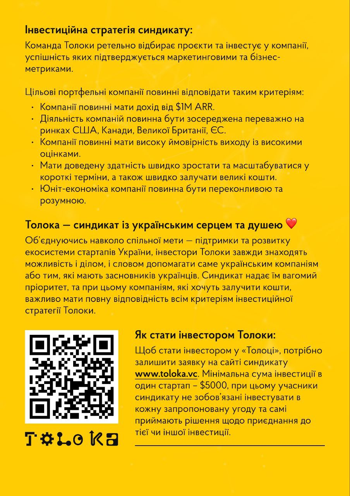

Metanoia.mba – це простір, де "метаноя" означає зміну мислення або серця, що пов'язана з трансформацією життєвої парадигми або світогляду. "MBA" для нас означає "Mastering Being Alive", що відображає ідею особистісного зростання та розвитку в рамках програми розвитку.
Наша мета – надати доступ до класичних текстів українською мовою, особливо тих, що раніше не перекладалися. Ми зосереджені на книгах у публічному домені, використовуючи штучний інтелект для перекладу.
Допоможіть нам створити потужний корпус літератури українською. Ми завжди відкриті до ваших ідей та пропозицій на metanoia.mba@gmail.com.
Бажаємо вам приємного читання!
www.toloka.vc.  www.toloka.vc.